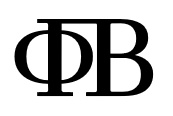

A "proxy" allows you to access any website, blocked or not. In case it stops working, relaunch it.
To hide this from your history, go to settings then Safari, then disable "Block Pop-ups". It is recommended to add a bookmark of this.
Current leaked proxy: Proxy
Add these links as bookmarks then use the bookmarks on the respective sites.
I do not encourage the usage of these cheats, nor do I take responsibility for their usage.
You can chat with anyone with the same code as you! Just put in something to the box below then click the button!
You can chat in the ΦΠΒ chat (Phi Pi Beta) or select your own with the box below! (The chats are globally accessable!)